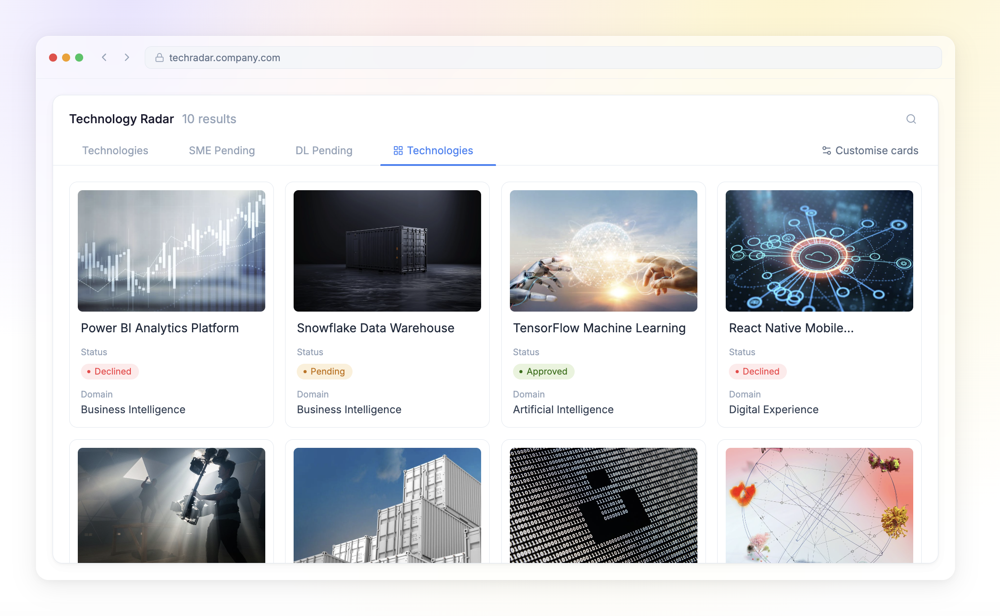

Technology Radar — Gallery View
Rethinking how users browse and explore data in an enterprise platform. Designed a flexible view system that transforms dense data tables into visual, scannable gallery cards — giving users a faster, more intuitive way to discover content without sacrificing the depth of structured data.
